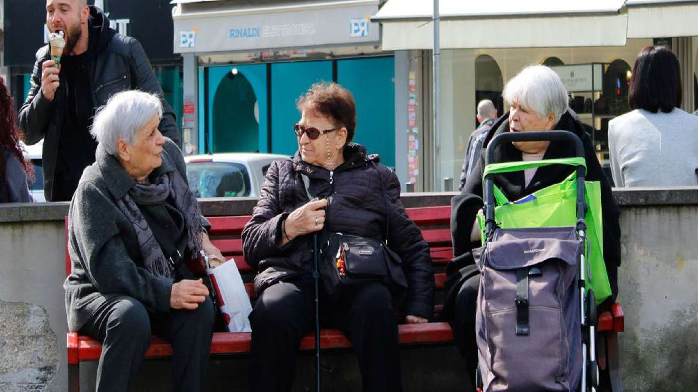
Monti di Pietralata Before the Stadium
Access Full Report ->Monti di Pietralata is a neighborhood in Rome’s eastern periphery that has been shaped by nearly a century of top-down planning. Today, it is facing a €1 billion AS Roma stadium development, which is currently advancing through its approval process. Each successive master plan in the neighborhood’s history has promised transformation, but has instead left behind large tracts of undeveloped public land. This development cycle has prompted us to determine what exactly has drawn developers to build in the Monti di Pietralata area, and the repercussions it has for the local community in terms of public space accessibility. We also investigate the nature of local civic groups as a way to inform, educate, and activate residents on the projects that are on the horizon.
This report takes a multi-method approach to understanding Monti di Pietralata, synthesizing quantitative spatial analysis with qualitative fieldwork including resident and stakeholder interviews, site visits, and historical research. We present findings on the neighborhood’s history, demographics, built environment, transportation networks, non-built areas, real estate market, community groups, and the projected impacts of the stadium and surrounding developments.
Team: Leo Chen, Jade Nichols, Roma Patel, Lauren Quellos
Research Questions
- How has Monti di Pietralata become a target neighborhood within Rome for master planning and capital projects?
- What impact will these project have on existing public space and new public space?
- To what extent do civic groups effectively provide the neighborhood with information or advocacy opportunities in response to these developments?
Neighborhood Context
Over four months we developed an intimate understanding of the Monti di Pietralata neighborhood, which is bounded by Via dei Monti Tiburtini to the north, Via dei Durantini to the east, Via Tiburtina to the south, and the Tiburtina Station tracks to the West. This section encompasses dense Intensivi blocks, shops, parks, a community church and square, informal settlements, and a largely undeveloped area that includes the projected stadium development site.
The study area sits within the larger known Pietralata area (formally designated as Quartiere XXI Pietralata), which includes Tiburtina Station and the historic Pietralata neighborhood along the Aniene River. This distinction that matters because many residents view themselves as separate from these adjacent areas despite frequent conflation from outsiders.
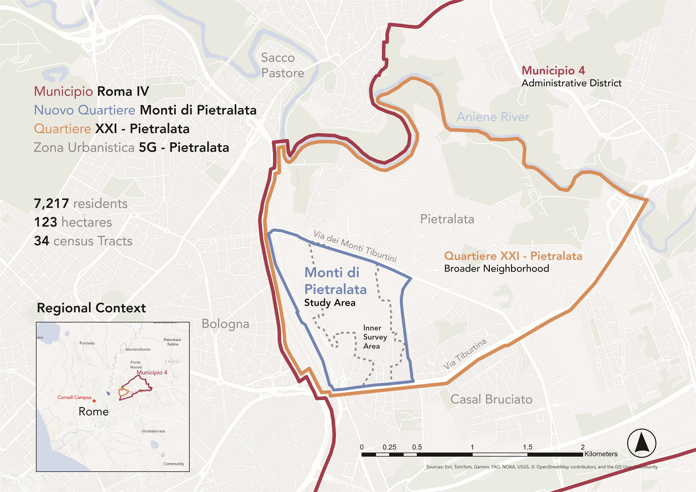
Methodology
Community engagement was the most central piece of our methodology. We conducted semi-structured interviews and cognitive mapping exercises with residents, business owners, religious leaders, and institutional stakeholders, involving a range of ages, tenures, and relationships to the area. These conversations shaped our understanding of how residents perceive their neighborhood boundaries, what community assets they value, and how they feel about incoming development.
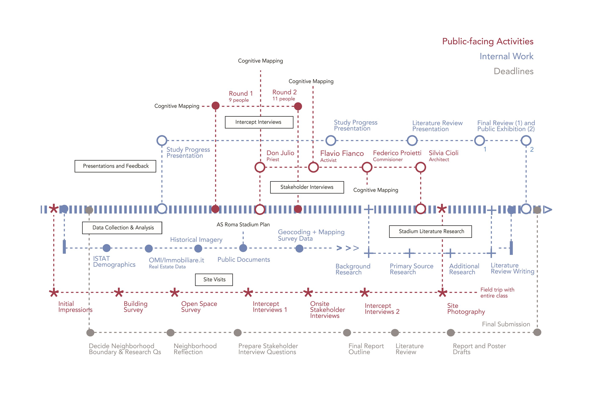
The AS Roma Stadium
The new AS Roma stadium is the most prominent major development in Monti di Pietralata. It aims to be completed in 2030 in order to serve as one of the stadiums for the UEFA Euro 2032 (being hosted in Italy and Turkey). This is an initiative to build new grounds for the beloved Roman soccer team that currently shares the Stadio Olimpico with Lazio.
The plan covers 27 hectares and includes the 60,605-seat stadium, two large public parks (a 6.9-hectare Parco Centrale and a 6.7-hectare stadium park), the former Via Sublata as a public plaza, a club museum, fan store, 30 retail points, extensive hospitality and conference space, and over 91,000 m² of parking across interred, multi-story, and surface-level structures.
- Projected Cost
- €1+ Billion
- Current Stage
- Awaiting Final Approval
- Funding Source
- Private
- Total Area Impact
- 27 Hectares
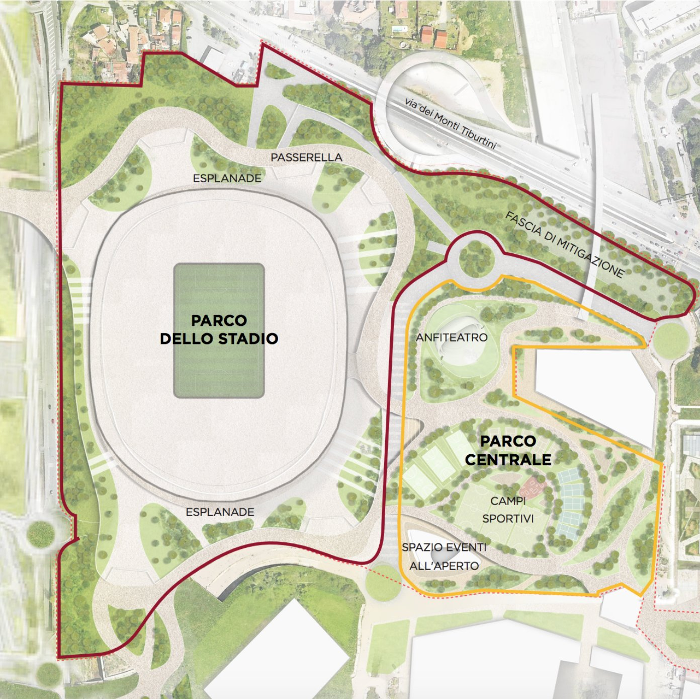
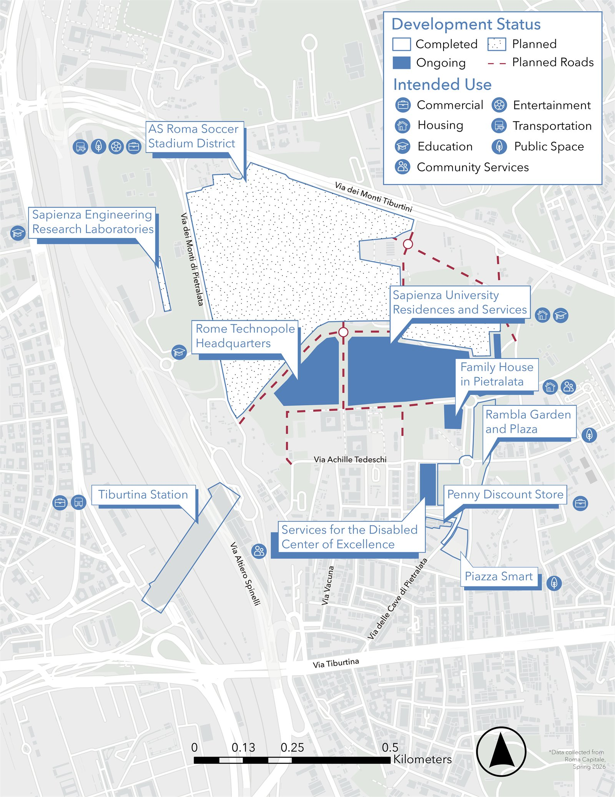
Public Space Impact
The stadium development’s promise of over 15 hectares of public space must be evaluated against both the history of the site and the precedents set by comparable Italian stadium projects. The land on which the stadium will be built was originally expropriated by the public in the 1990s at a cost of roughly €21 million, with the intention of creating a large public park for a neighborhood that has long lacked usable green space. While the plan designates 11.6 hectares as green space, the Comitato Popolare Monti di Pietralata contends that the truly usable daily park space is closer to 6.9 hectares, once security buffer zones and landscaping strips are excluded. This is a significant reduction from the 14 hectares originally envisioned under the SDO park plan.
Meanwhile, the smaller developments surrounding the stadium (the Technopole, Sapienza campus, Family House, Center for Excellence) each promise their own green components, but as landscape architect Silvia Cioli emphasized, these projects operate in complete isolation from one another with no unified public space strategy.
Fieldwork Survey
In addition to the buildings, the unbuilt areas of the neighborhood were also surveyed. Each unbuilt area identified within the neighborhood was numbered from 1-36 and a spreadsheet containing different categories to be evaluated for each area was created. The categories included the area name and usage (undeveloped, construction, parking, park or square, or sports court or field), the level of maintenance (ranked from 1-4), level of greenery (ranked from 0-4), its level of usage (ranked 1-4), whether the space is publicly accessible, and general notes regarding the space and its greenery.
Non-Built Areas
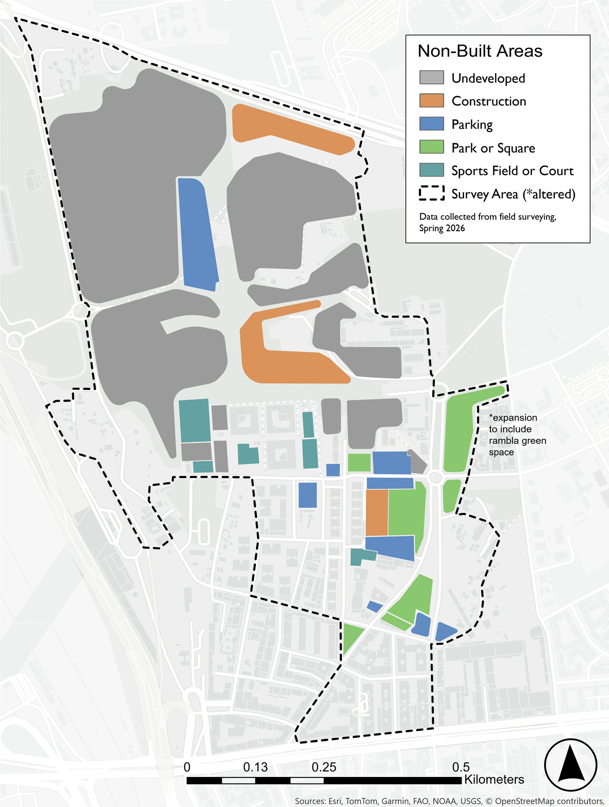
Building Condition
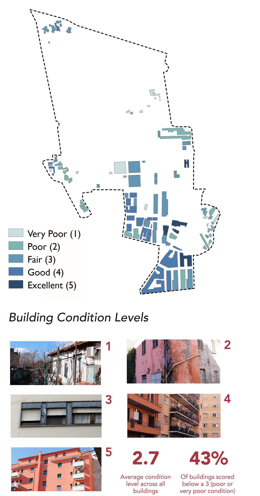
From Open Space to Usable Public Space
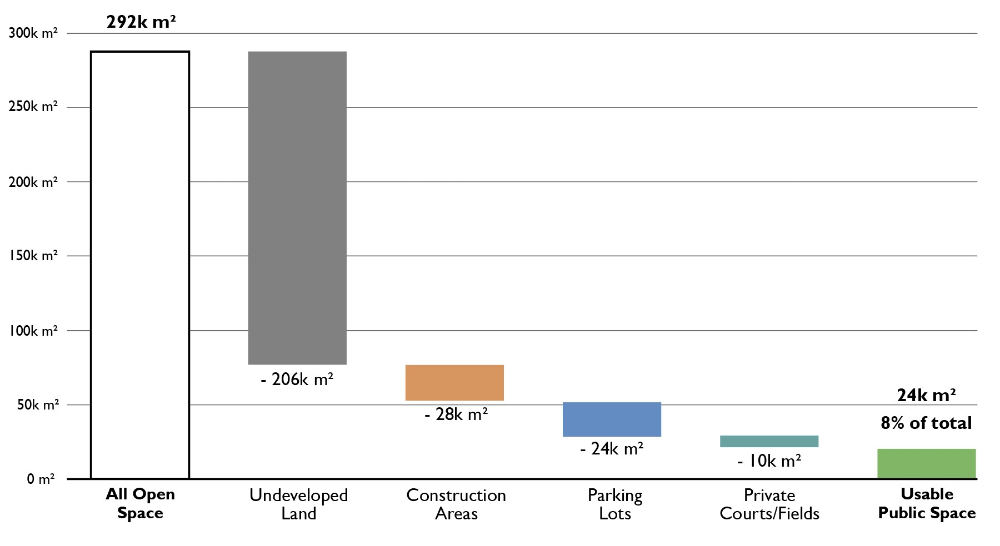
Road Network
Internally, the street network is sparse and low-capacity, dominated by Level 1 and Level 2 roads with limited through-connectivity, numerous dead ends, and inconsistent sidewalk coverage. Via delle Cave di Pietralata functions as the sole meaningful collector linking neighborhood traffic to the bounding arterials, creating a bottleneck vulnerability. Although volume is too low for us to perceive any capacity issues onsite, the limited road capacity is a critical concern given the proposed AS Roma stadium and Sapienza developments to the North. Adjacent to these development sites, Via dei Monti Tiburtini is being renovated in order to reduce vehicular traffic for game days and allow ambulances to pass.
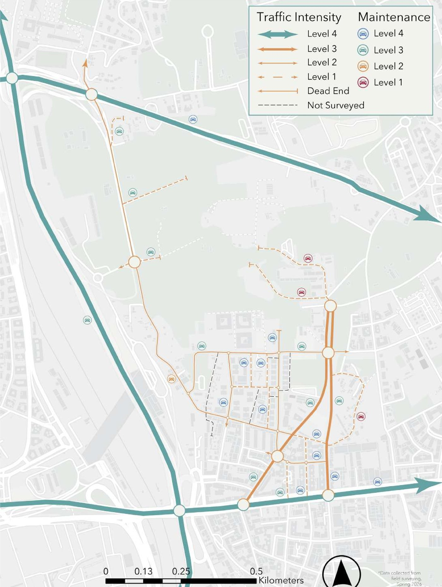
Via Tiburtina (Facing East)
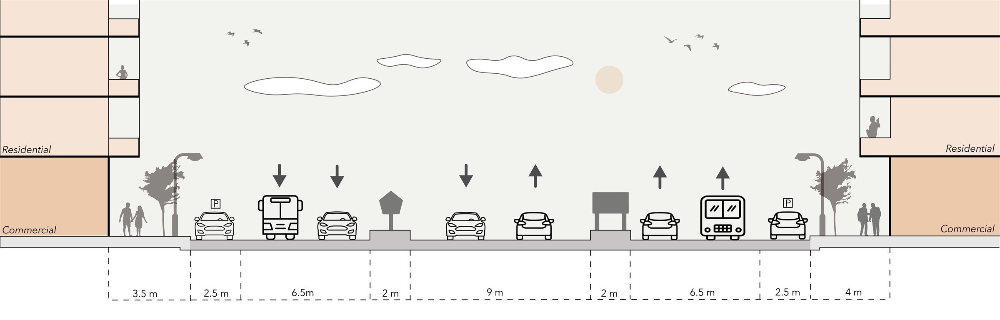
Via delle Cave di Pietralata (Facing North)
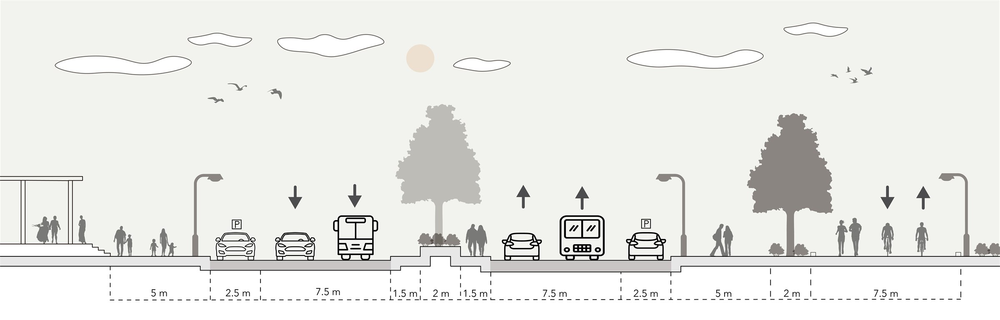
Community Engagement
What defines a neighborhood if not people? What is Monti di Pietralata without the people who live inside its boundaries? It is this baseline understanding of the value of the individual perspective that makes this community engagement section vital. This community engagement section is split into 3 distinct categories: stakeholder interviews, intercept interviews, and cognitive (Lynch) mapping.
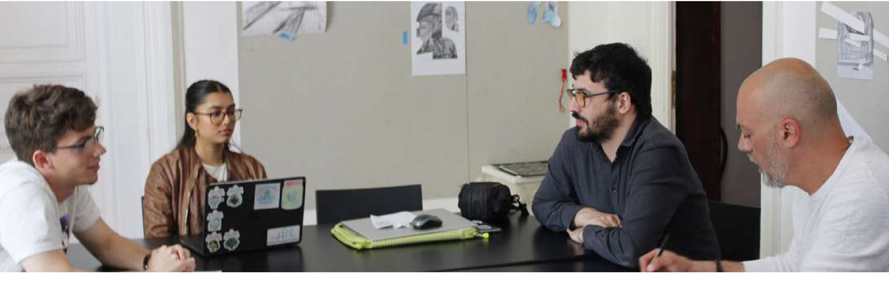
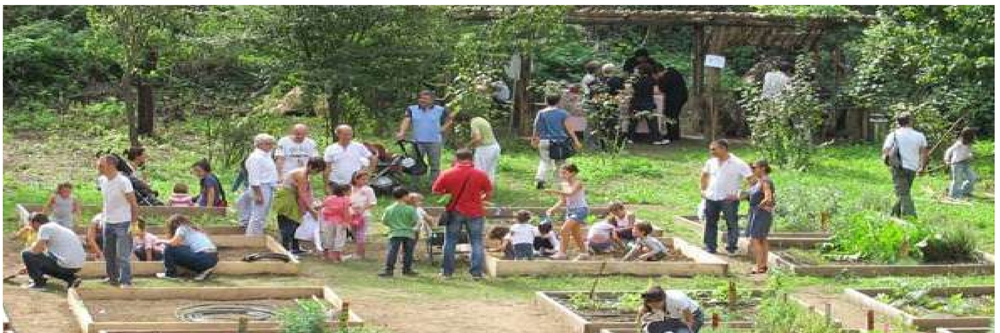
Cognitive Maps
Cognitive mapping, often referred to as Lynch mapping after urban planner Kevin Lynch, is a technique used to understand how individuals mentally perceive the spaces they inhabit. Interviewees were given a blank sheet of paper and asked to draw a map of their neighborhood from memory, highlighting the places and landmarks they recall most. The maps are not intended to be geographically accurate but rather serve to reveal which elements of the neighborhood hold the most significance to each person.
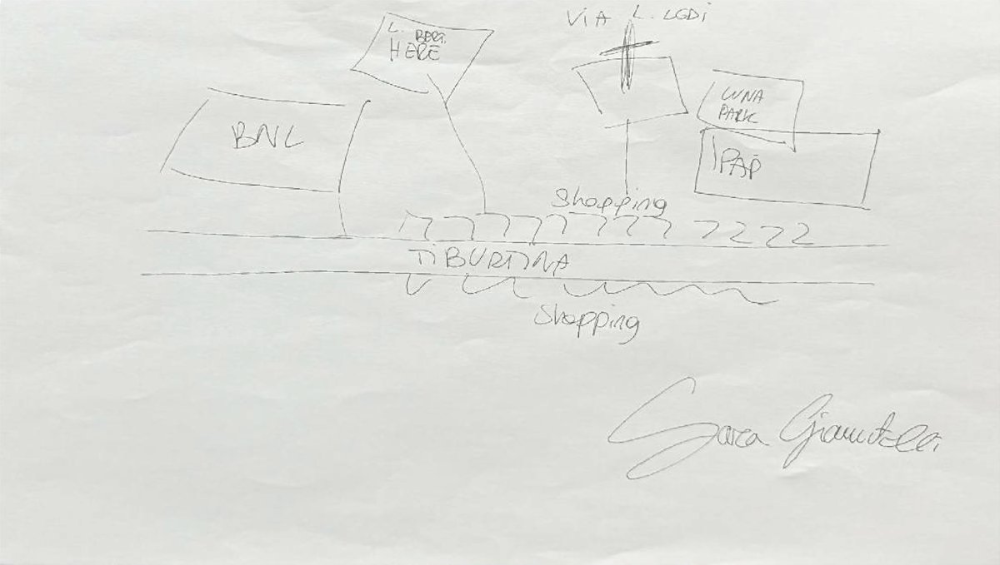
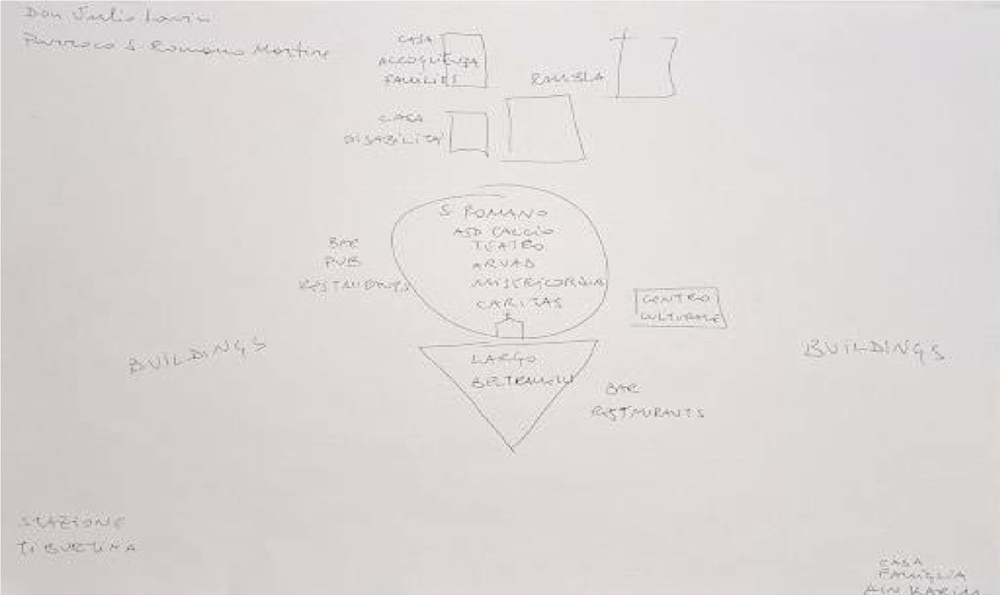
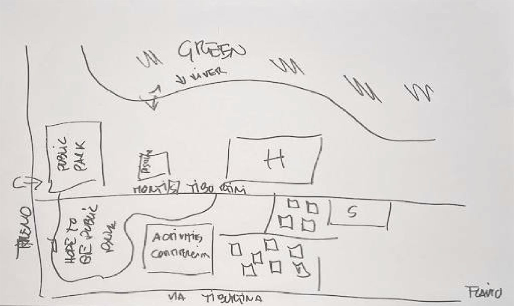
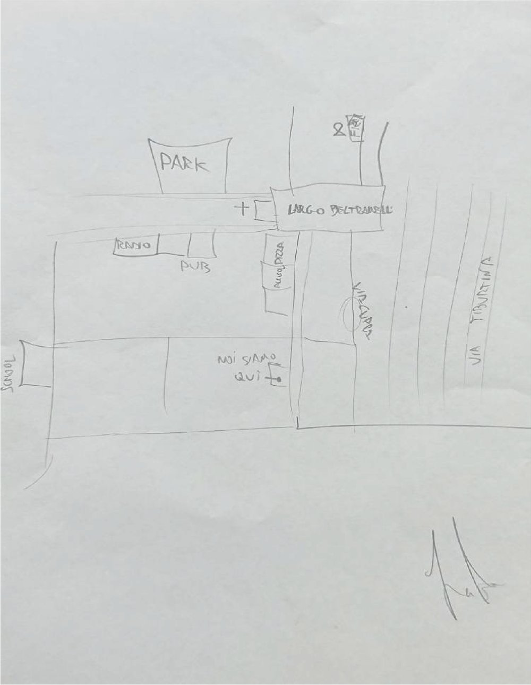
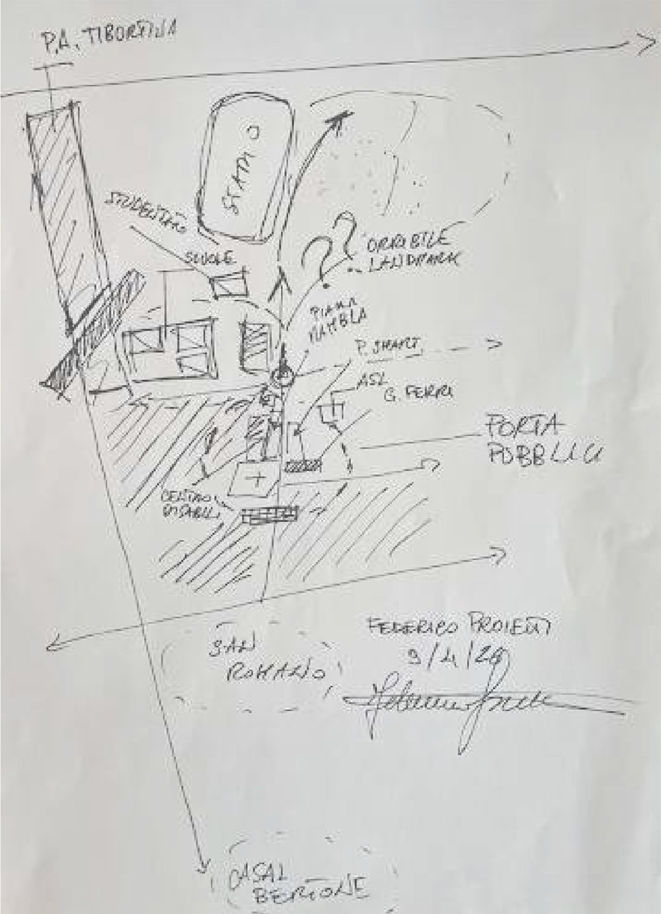
Federico Proietti indicated the location of the projected AS Roma stadium, likely due his clear relationship to the project through his work. This leads to 3 conclusions: (1) community members are not aware of the stadium development (2) community members do not believe the stadium will be built (3) the stadium is not of importance to community members. This framework may be deceptively narrow, but sets a basis for understanding the stadium and other developments’ perceived impact.
Neighborhood SWOT
Strengths
- Well Established Public Transit and Mobility
- Community Organizations and Activity
- Strong Development Potential
Weaknesses
- Lack of Coordination and Awareness
- Environmental Deterioration and Physical Limitations
- Inadequate Access to Green Spaces
Opportunities
- Economic Benefits of Stadium
- Creation of a Unified Culture
- Investment into Surrounding Area
Threats
- Accessibility and Follow-Through of Development
- Lack of Unified Vision
- Overloading the Structural System
Community Pamphlet
We do not claim a complete understanding of Monti di Pietralata. However, utilizing the information we were able to gather, we have produced a SWOT analysis, answered our research questions, and created a tri-fold community pamphlet so that residents and stakeholders can easily learn about the development landscape and find resources to engage with actors. We hope these tools contribute to a more informed and inclusive conversation about the neighborhood’s future.
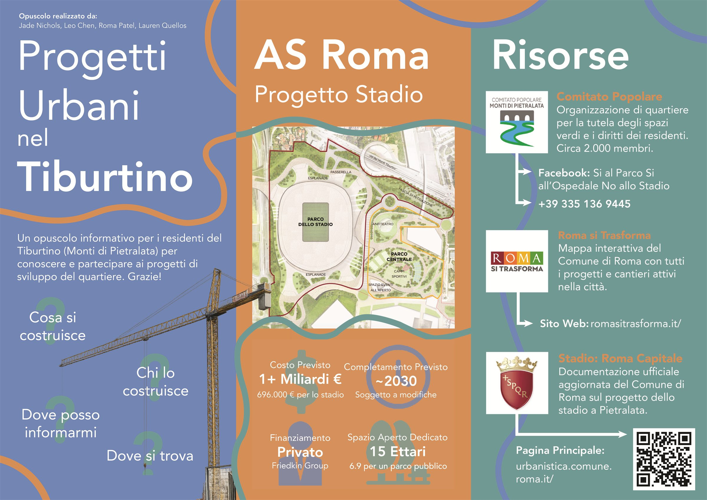
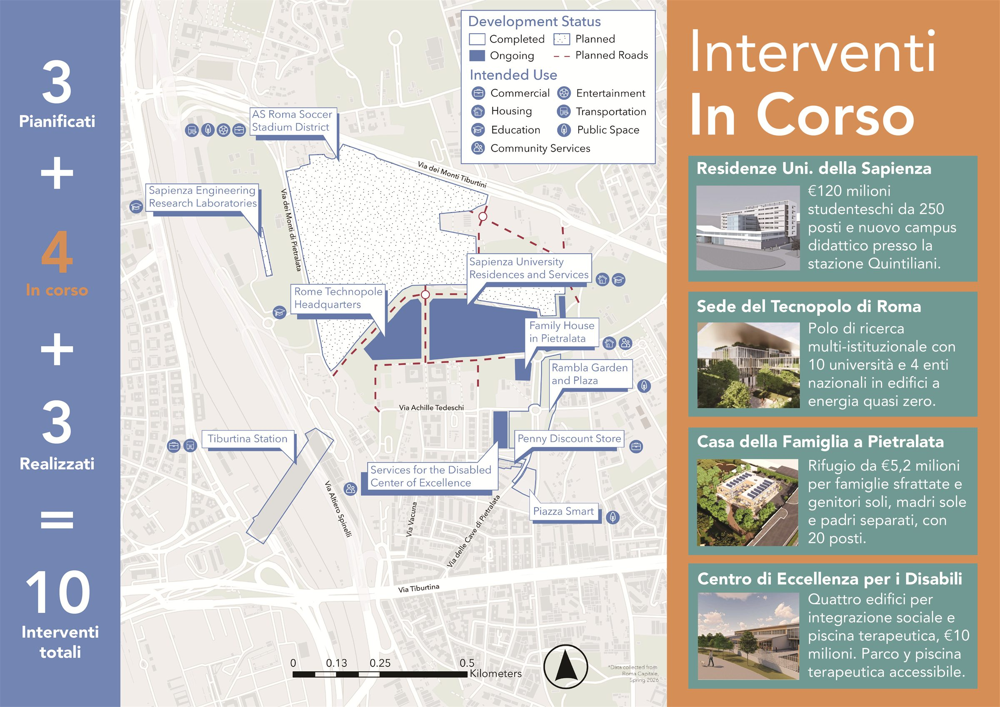